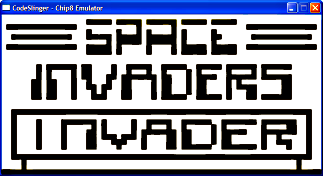
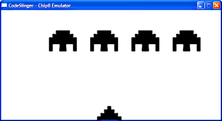
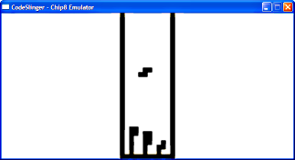
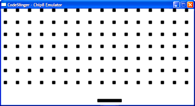
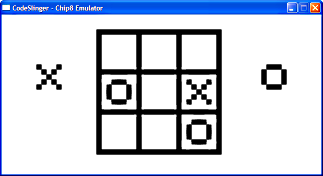

About my emulator:
When I originally wrote my chip8 emualator I used my gaming libraries I had already written for the graphic and sound emulation. My libraries are not open source which is why I recently decided to rewrite a chip8 emulator which didnt rely on my gaming libraries so I could release the sourcecode on this website. The only disadvantage with this is that as I dont know OpenAL there is no sound emulation for this release. However I have included an empty function called PlayBeep() which is where the code to play a beep sound should go, so it should still give you knowledge of how the sound timing works in the chip8. You just wont be able to hear anything.
Read Me Before Downloading:
My emulator will compile under both Windows and CodeBlocks under Linux. What to remember when running under windows is make sure SDL.dll is in the same directory as the executable and depending on how you're running the exectuable you will need to either put game.ini and the ROMS directory in the same folder as the executable or in its parent folder. Make sure you edit game.ini to get the timing correct and to which Chip8 rom file to load.
I am not releasing any chip8 rom files with the source code as this is highly illegal. If you want the ROMS you will have to find them yourself and you can only legally download them if you own the original chip8 system!
Remember this emulator was designed to aid those struggling to get started with emulator programming. I have purposefully left out the nicities like state saving and GUI programming to keep the source code clean and clear. EnjoyDownloads:
You can download the latest release of my Chip8 emulator source from here
Screenshots:
Opening screen to space invaders:

Space Invaders:

Tetris:

Wipeoff:

TicTacToe:
